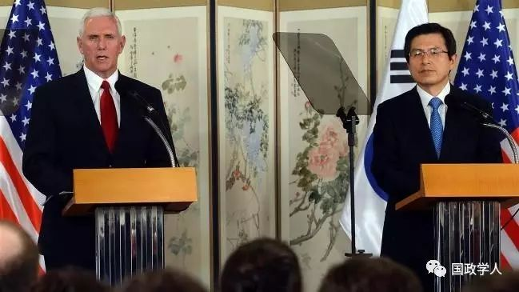
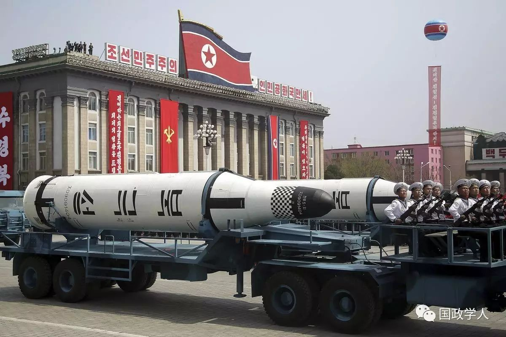
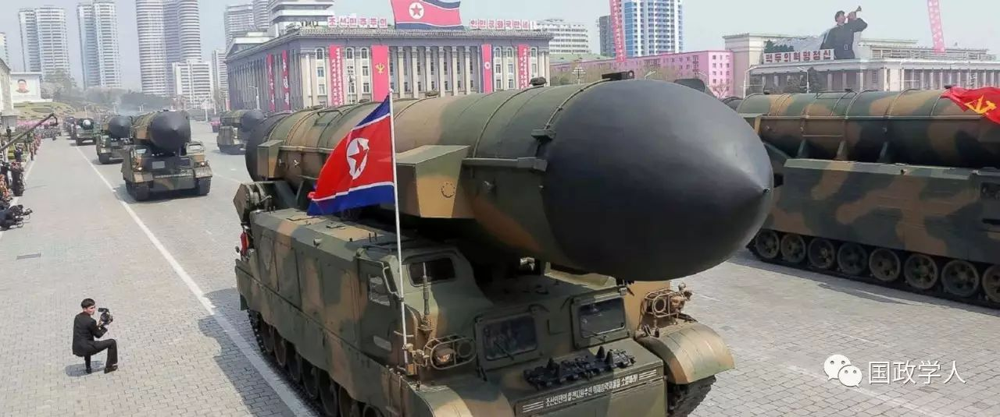
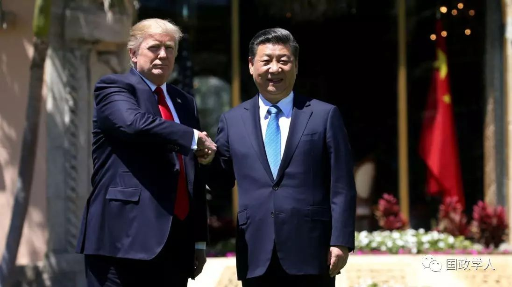

收录于合集

DIPLOMACY | What does Pence’s visit to East Asia mean to the NE Asia ?
外交 | 彭斯的东亚之行对东北亚来说意味着什么
孟维瞻：
**
**
香港大学政治与公共行政学系博士研究生、助教。曾就读于北京外国语大学英语学院、南京大学－霍普金斯大学中美文化研究中心，兼任万里长安研究院研究员、海国图智研究院实习员、新华社Asia Pacific Daily专栏作者。主要研究领域为非西方国际关系理论、东亚安全、古代中国对外关系。曾在《当代亚太》《国际政治科学》以及China Review杂志上发表学术论文或书评，出版专著1部，译著4部。多次在ISA、MPSA、CCPSIS等重要国际学术会议上宣读工作论文。
本文转载自《亚太日报》，已经作者授权，转载需联系作者
By APD writer Meng Weizhan
Mike Pence, Vice President of the United States, recently visited its partners in the Asia-Pacific region.
He endeavored to deliver a tough message toward Pyongyang on dealing with DPRK (Democratic People’s Republic of Korea)’s nuclear weapons program, stressing “the era of strategic patience is over” and “all options are on the table”. Pence reassured South Korea that the United States will stand “shoulder-to- shoulder” with its ally. It’s obvious that his main purpose is to coordinate measures to be taken against DPRK with partners, hoping to pose greater threat to DPRK.
Would the United States eventually attack DPRK to destroy its nuclear weapons or even overthrow the Kim Jong Un’s regime?
I hold that the war is not possible, but the next few months would have more and more serious crisis in Northeast Asia. Admittedly, US attack to DPRK would involve high cost and risk. Even if the DPRK army suffers a heavy loss consequently, the war would also cause serious loss to South Korea and Japan. What’s more, dirty bombs and chemical weapons of DPRK will bring terrible problems to the entire peninsula, which will surely make US hesitate. However, once the DPRK is able to send nuclear weapons to the United States, the security of the latter will be seriously threatened. In this case, the United States must spare no efforts to prevent DPRK from obtaining the ability to attack it with nuclear weapons.

Therefore, it comes to a turning point where the United States would bear terrible consequences without waging a war against DPRK.
My prediction is that in the future the United States would be more and more determined to attack DPRK, with a clearer signal of war, which would throw Kim Jong Un into fear someday. Taking the survival of the regime as his highest goal, Kim did not dare to put nuclear weapons into use. Therefore, as long as the pressure imposed by the United States reaches a certain point, Kim Jong Un will compromise eventually. It may be still remembered that in 1994, Kim Il Sung gave in and agreed to sign an agreement with the United States under the great pressure of Bill Clinton.
However, for the moment, there’s no sign of compromise from DPRK, high officials from which are still constantly provoking the United States orally. The reason is that the current pressure imposed by the United State hasn’t become strong enough to bring the compromise of DPRK, which believes that the United States has not yet determined to attack.

In addition, the South Korean election has not been held yet, so big uncertainty about the result of the general election of South Korea could undermine Trump’s plan to tighten the noose around the DPRK. Recently, US may moderate until the result of South Korean presidential election is comes in mid-May, which would witness tougher stance of it. At present, it can’t be claimed that a certain presidential candidate in South Korea has an absolute advantage. If Moon Jae-in of the Left comes to power, he may strongly oppose US plan to attack DPRK. Ahn Cheol-soo is somewhat more centrist. But he is unlikely to be as close as to the Trump administration on key issues as the Conservative Party leaders who will soon leave power. The fact may be that Kim Jong Un has realized that South Korea will not agree with the military plan of the United States.


But in any case, if DPRK continues to develop nuclear weapons, US motivation to attack DPRK will become more clear, which will lead to further tension in Northeast Asia sooner or later. In the short term, the DPRK may delay the next nuclear test in order not to irritate the United States, but without firm determination to attack it, US will fail to make DPRK give up its nuclear program.

President Xi Jinping and President Trump held a meeting
Is there any agreement between China and the United States? At the beginning of April, President Xi Jinping and President Trump held a private meeting. After that, Trump spoke highly of Xi on many occasions. Although it is still unknown whether the two sides have reached an agreement on the DPRK issue, Trump’s comments on Xi illustrate his satisfaction with the meeting. It can be speculated that Xi may have made some concessions, such as promising to impose greater pressure on the DPRK. Meanwhile, Trump may have also satisfied some of China’s requirements, such as publicly announcing that “it won’t overthrow the DPRK regime”, which was beyond the public speeches from the Obama administration.
What’s even more puzzling is that earlier rumors came that the United States may hope to postpone the deployment of THAAD in order to alleviate China’s resistance, which was soon denied by the US government. Perhaps it is the tendency of cooperation between China and the United States that caused DPRK’s recent discontent toward China. For example, Bloomberg News reported that DPRK rejected Chinese Vice Foreign Minister Wu Dawei’s visit.
Trump hopes that China would give a hand to exert pressure on DPRK in order to avoid war. His threat to DPRK is also a signal to urge China to avoid wars. However, the effect of China’s current pressure on DPRK is clearly limited. On the one hand, China failed to persuade DPRK to give up nuclear weapons. On the other hand, China is not as urgent as the United States in requiring DPRK to abandon nuclear weapons, because that can’t pose a direct threat to China’s security. Therefore, in spite of China’s pressure on DPRK, without a firm shape of attacking, the United State couldn’t make it yield.
In general, the US earlier pressure on DPRK does work and it’s unlikely for DPRK to carry out nuclear tests recently. It can be speculated that better effects would be seen if the US continues to impose pressure, which would also inevitably cause further tension in Northeast Asia.
Meng Weizhan is a PhD student at the Department of Politics and Public Administration, the University of Hong Kong. His research interests focus on China’s foreign policy, East Asian security, strategic studies, and international relations theories.
(ASIA PACIFIC DAILY)